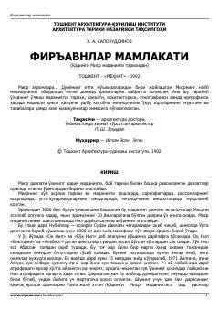

FMQadimgi Misr tarixi, madaniyati va meʼmorchilik sanʼati haqida qiziqarli maʼlumotlar toʻplami.
Ushbu kitob qadimgi Misr sivilizatsiyasi, uning boy tarixi, madaniyati va meʼmorchilik sanʼati haqida hikoya qiladi. Muallif Nil daryosining ahamiyati, firʼavnlar davri va qadimgi Misr jamiyatining shakllanish jarayonlarini ilmiy-ommabop tarzda yoritib beradi.